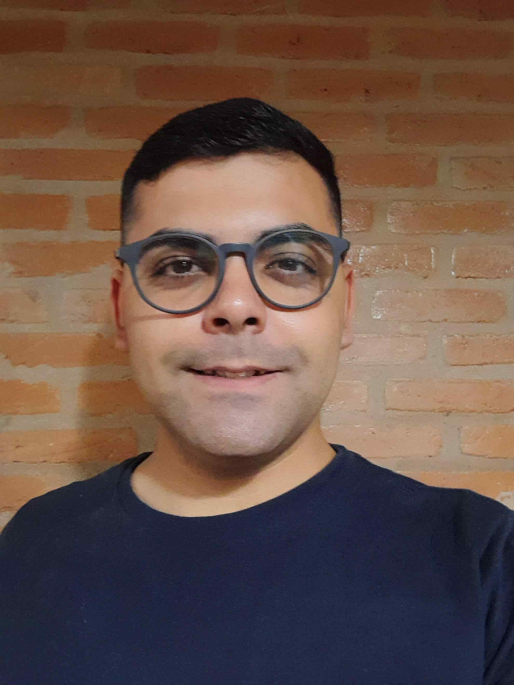

Lucas Mendes de Araújo | WDD 130

Olá! Meu nome é Lucas Mendes de Araújo e sou de Monte Mor (Região de Campinas), São Paulo. Sou estudante de Desenvolvimento de Software na BYU-Pathway World Wide em português. Atualmente sou operador de produção em uma multinacional chamada Novonesis, uma empresa de biossoluções para melhorar o mundo.